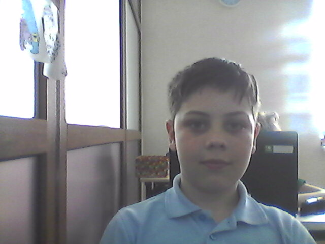

ThinkGlobal
Denys vysochin
birthday:9 apryl 2007
hometown:Kiev

my hobby. I like to play computer games Quake 3, cs: go, cs 1.6, gta 5 and other games. sometimes
I read books, sometimes I listen to music, and sometimes I do nothing. :)
I read books, sometimes I listen to music, and sometimes I do nothing. :)
компания Space-X основана в 2002 году прежним акционером PayPal и CEO Tesla Motors Илоном Маском, с целью сократить расходы на полёты в космос, открывая путь к колонизации Марса. Компания разработала ракеты-носители Falcon 1, Falcon 9 и Falcon Heavy с самого начала преследуя цель сделать их многоразовыми, и космический корабль Dragon (выводимый на орбиту теми же Falcon 9), предназначенный для пополнения запасов на Международной космической станции. Пассажирская версия корабля Dragon V2 для транспортировки астронавтов на МКС находится в финальной фазе разработки
The company Space-X has created a missile that can be launched several times.
The stepped step was put on water and reused.

The company Space-X has created a missile that can be launched several times.
The stepped step was put on water and reused.
Porocesd by Denys Vysochin 2018.com.ua!
d1420831@gmeil.com
d1420831@gmeil.com